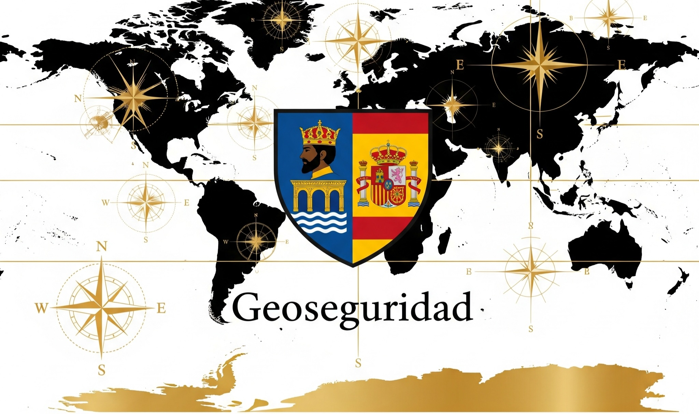

Manual de Geoseguridad
Capítulo 1: Definición de Geoseguridad: Concepto nuclear, evolución terminológica (multilingüe), pilares fundamentales.
La Geoseguridad, como disciplina emergente y vital en el siglo XXI, representa la confluencia de la geografía, la seguridad y la tecnología para abordar los desafíos contemporáneos que trascienden las fronteras tradicionales. No es meramente un concepto teórico, sino un marco operativo esencial para la toma de decisiones estratégicas en un mundo interconectado y en constante evolución.
Su estudio implica una comprensión profunda de cómo los factores geográficos —tanto físicos como digitales— influyen en la seguridad de Estados, organizaciones y poblaciones. Esto incluye desde la protección de infraestructuras críticas y recursos naturales hasta la gestión de flujos migratorios, el impacto del cambio climático y la ciberseguridad con dimensión territorial.
La Geoseguridad se distingue por su enfoque holístico y predictivo, utilizando herramientas avanzadas de análisis geoespacial, inteligencia de fuentes abiertas (OSINT) y la integración de inteligencia artificial (IA) para anticipar y mitigar riesgos. Su objetivo primordial es garantizar la estabilidad y la resiliencia frente a amenazas complejas e híbridas, asegurando la continuidad de las operaciones y la protección de los intereses vitales en un entorno geográfico dinámico.
La Geoseguridad integra múltiples disciplinas para proteger activos territoriales.
Evolución Terminológica (Multilingüe):
El término "Geoseguridad" ha evolucionado a partir de diversas disciplinas como la Geopolítica y la Geoestrategia, adaptándose a las nuevas realidades de la seguridad global. Aunque el término en español es directo, en otros idiomas se pueden encontrar aproximaciones o conceptos relacionados:
- **Inglés:** "Geosecurity" es el término más directo, aunque también se usan "Geopolitical Security" o "Geospatial Security".
- **Francés:** "Géosécurité", con énfasis en la interacción entre geografía y seguridad.
- **Alemán:** "Geosicherheit", reflejando una preocupación por la seguridad en el espacio geográfico.
- **Árabe:** مفاهيم الأمن الجغرافي (Mafahim al-Amn al-Jughrafi - "Conceptos de Seguridad Geográfica"), destacando la naturaleza espacial de la seguridad.
Esta evolución refleja una creciente conciencia global sobre la interconexión entre el espacio geográfico y la seguridad en sus múltiples facetas.
Pilares Fundamentales de la Geoseguridad:
La Geoseguridad se asienta sobre varios pilares interconectados que le otorgan su carácter integral:
- **Análisis Geoespacial:** Uso de Sistemas de Información Geográfica (SIG), teledetección y otras tecnologías geoespaciales para analizar datos y comprender patrones territoriales.
- **Inteligencia de Fuentes Abiertas (OSINT):** Recopilación y análisis de información disponible públicamente (redes sociales, medios, foros) con un enfoque geográfico para identificar amenazas y oportunidades.
- **Gestión de Riesgos Geográficos:** Identificación, evaluación y mitigación de riesgos asociados a la ubicación geográfica, como desastres naturales, conflictos territoriales o vulnerabilidades de infraestructuras.
- **Ciberseguridad Territorial:** Protección de las infraestructuras críticas digitales (redes, centros de datos) y la información geoespacial frente a ataques cibernéticos que pueden tener un impacto físico o territorial.
- **Protección de Recursos Críticos:** Salvaguarda de los recursos naturales (agua, energía, minerales) y las cadenas de suministro que son vitales para la estabilidad y desarrollo.
- **Adaptación al Cambio Climático:** Evaluación de los impactos del cambio climático en la seguridad (migraciones forzadas, escasez de recursos, inestabilidad) y desarrollo de estrategias de adaptación.
- **Marcos Legales y Éticos:** Establecimiento de normativas y consideraciones éticas para el uso de datos geoespaciales y la implementación de medidas de seguridad que respeten los derechos fundamentales.
Estos pilares no solo definen el alcance de la Geoseguridad, sino que también guían su aplicación práctica en la prevención de crisis, la protección de intereses nacionales y la promoción de un entorno global más seguro.